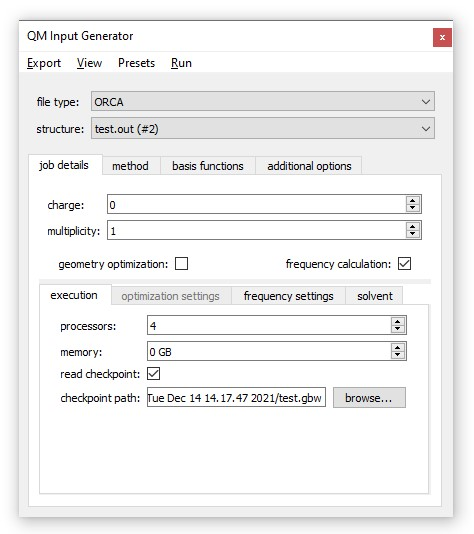
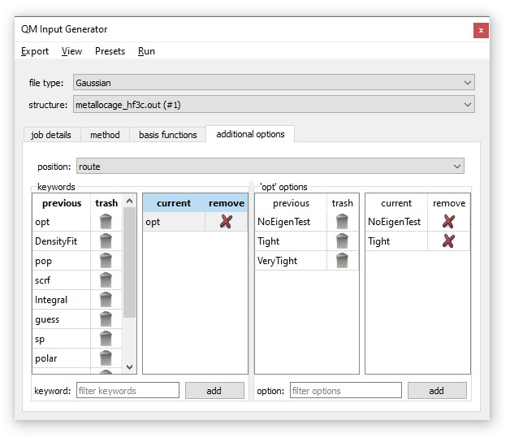
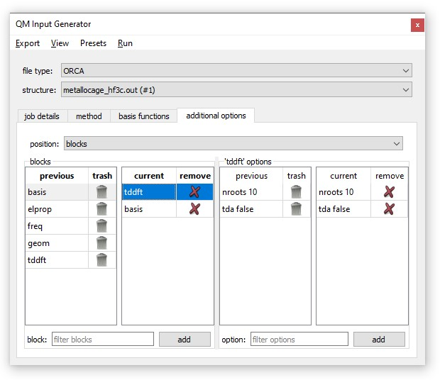
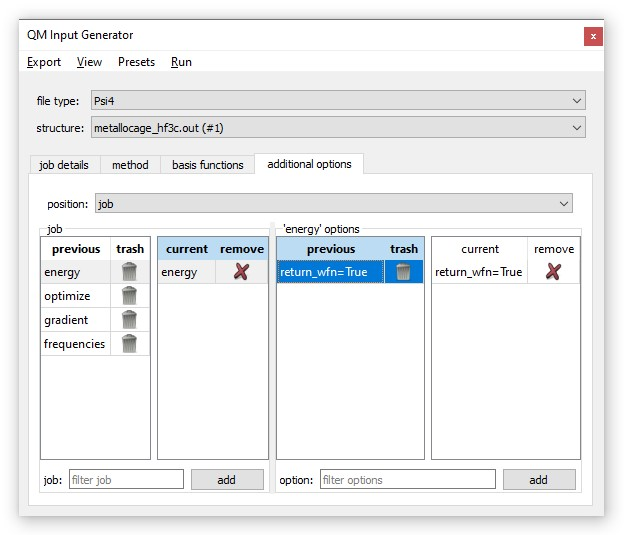
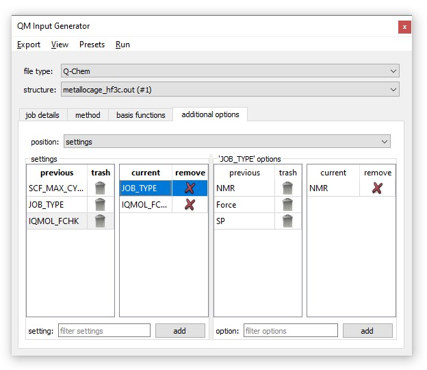

The user can control the number or CPU cores and memory for the job. Note that some programs, like Gaussian and ORCA, do not limit the job to the specified memory, just the memory used by some of the more memory-intensive parts of the job (e.g. electron repulsion integrals or storing wavefunction info). For SQM, these options are disabled as they cannot be modified.
For Gaussian, the user can also request to use a checkpoint file. This can be used to either restart a job or save a job's progress. ORCA uses can request a Hessian or wavefunction information to be read.
For geometry optimization jobs, you can select a transition state structure optimization or a constrained optimization.
For constrained optimizations, atoms and bonds can be selected on the molecule are added to the list of constraints. Two bonds or three atoms can be selected to constrain an angle. Three bonds or four atoms can be selected to constrain a torsion. If bond are selected to constrain an angle or torsional angle, the bonds must share an atom.
For SQM, TS optimizations and constrained optimizations are unavailable.
The user can select a temperature. This is used by the QM program to compute whatever thermochemistry it prints. Raman intensities can be requested for Gaussian and ORCA. For Gaussian, high-precision modes can be requested. This results in Gaussian printing 5 decimal places on normal modes as opposed to the default of 3.
Frequency calculations are unavailable for SQM.
For each QM program, several methods are listed. Most of these options are popular DFT functionals. For Gaussian and ORCA, two semi-empirical methods are also listed. For Psi4, two coupled cluster theory options are listed. SQM only has semi-empirical methods. You can also specify a method keyword by selecting 'other' on the drop down menu. When you export or run an input file with a user-defined keyword, that keyword will be saved. Double-clicking an item on the table of previously-used methods will set the current method to that.
An empirical dispersion correction can be selected, though this typically only applies to DFT calculations. Dispersion corrections can be important for non-covalent interactions, such as a system with two separate molecules.
The integration grid can also be selected. DFT methods require integrating a function to calculate the exchange-correlation contribution to the total energy. Numerical integration methods introduce error into the calculation, but are often necessitated by the complex form of the exchange-correlation calculation. Integration errors do not have a significant impact on the electronic energy of the system, but can shift the free energies by several kcal/mol, primarily due to errors in low-frequency vibrational modes. These errors can compound when calculating free energy differences (e.g. to calculate a reaction barrier height). The error can be reduced by selecting a finer grid or mitigated by using quasi-RRHO1 or quasi-harmonic2 free energies instead of RRHO free energy. More details and examples can be found here.
For Psi4, SEQCROW allows you to manually define monomers for SAPT computations.
A few basis sets are enumerated for each software package (except for SQM as basis sets are integral to its semi-empirical methods). Different basis sets can be used for different elements, however it is not possible to select multiple basis sets for one element. The user will also be prompted if an element is not included in any basis set. Diffuse basis sets (e.g. aug-cc-pVDZ, 6-311+G(2d,p) or def2-SVPD) are recommended for anions, zwitterions, systems with highly localized electron density, systems that are strained (e.g. 3-membered rings), conjugated systems, or systems with significant non-covalent interactions.
For ORCA, Psi4, and Q-Chem, it is possible to specify auxiliary basis sets. If the basis set is built-in, this will specify the auxiliary version (e.g. specifying cc-pVTZ as an auxiliary "C" basis set for ORCA will result in cc-pVTZ/C being used in the input file). As with methods, other basis set keywords may be specified.
For Gaussian, ORCA, and Q-Chem, an effective core potential (ECP) may be specified separately (for Psi4, the ECP ought to be included in the basis set definition). ECP's are basis sets with fewer basis functions for core electrons. They are often employed for heavier elements (row 5+) to reduce the computational cost associated with the number of orbitals on these atoms. The time-saving benefit should be weighed against the accuracy cost that comes with reducing the number of basis functions. The alternative is to use an all-electron basis set with or without including a relativistic correction. Consult you software's manual to see what relativistic corrections are available. Several recommendations from the ORCA team are:
Most other options must be specified by the user. Like user-specified methods and basis sets, these options are saved for use later.
The manual for the corresponding software package ought to have details on these keywords/options. It is also how most people on online forums give advice about running a particular job type or resolving an error.
Link 0 commands and route keywords and options can be specified. Link 0 commands should not include the '%' (e.g. use "save" instead of "%save"). Also, comment lines and lines at the end of the file (i.e. for NBOREAD) can be added.
For more details on where these appear in the input file, click here.
Route and blocks, along with block options, can be specified. The '%' should not be included in block names (e.g. use "basis" instead of "%basis"). Comment lines can also be added.
For more details on where these appear in the input file, click here.

Additional lines can be inserted before the molecule and after the job.
For lines after the molecule, $METHOD will be replaced with the keyword for the method.
As an example,
nrg, wfn = energy('$METHOD', return_wfn=True)
Comment lines can also be added at the top of the file. Hashtags are automatically added to the start of comment lines.
For more details on where different functions/settings appear in the input file, click here.
For more details on SQM input files, click here.
REM section.
Extra sections can also be added.
For more details on Q-Chem input files, click here.
For more details on xTB input, click here.
The input file is given to one of the external software packages to run a calculation. The executable corresponding to the selected file format should be specified in the 'SEQCROW Jobs' section of the ChimeraX settings. For SQM, SEQCROW will use the executable that comes with ChimeraX. Only one job can be running at a time. Jobs can be monitored using the 'Job Queue' tool.
Q-Chem jobs cannot currently be run locally through SEQCROW, though it should be possible to submit them to a cluster.